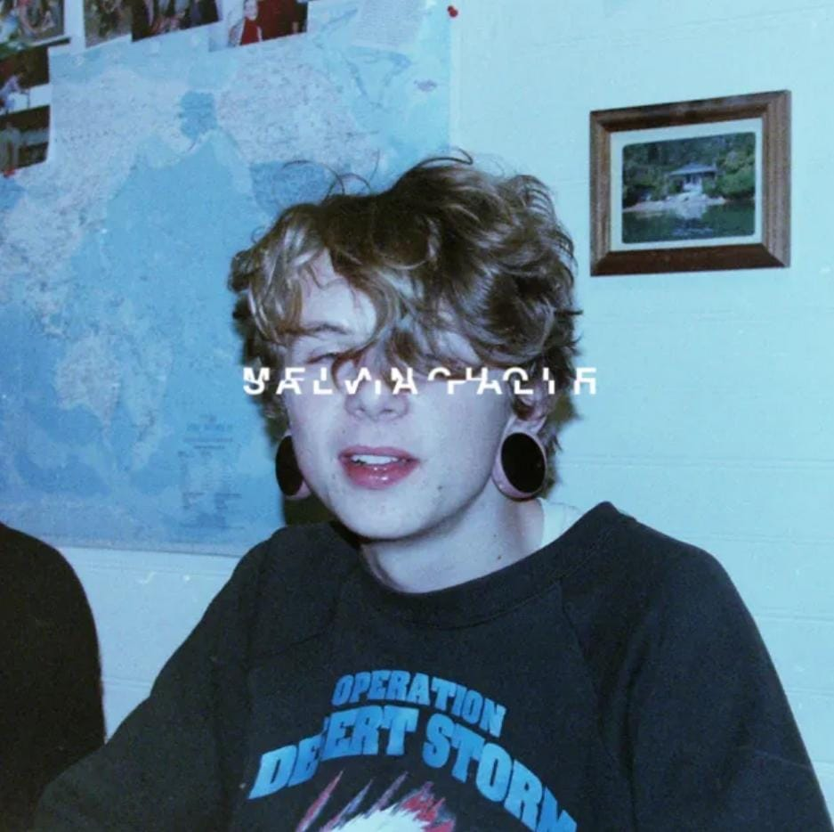
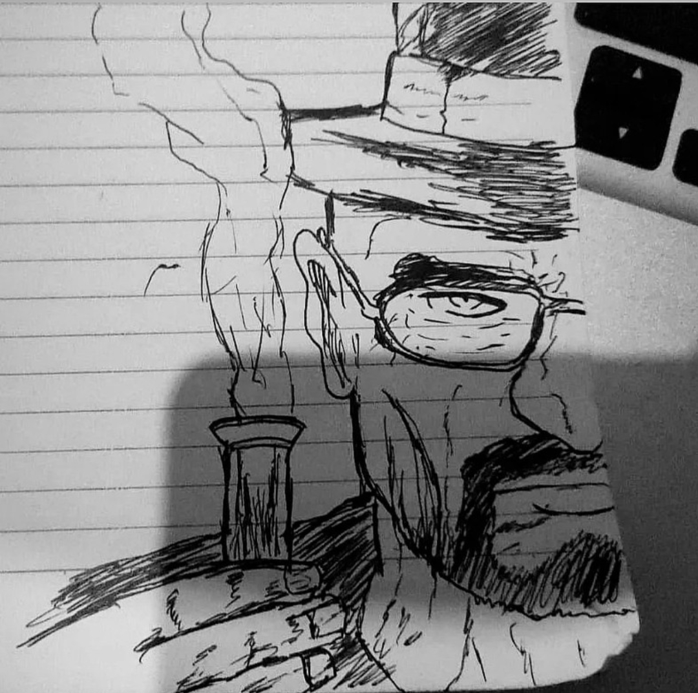
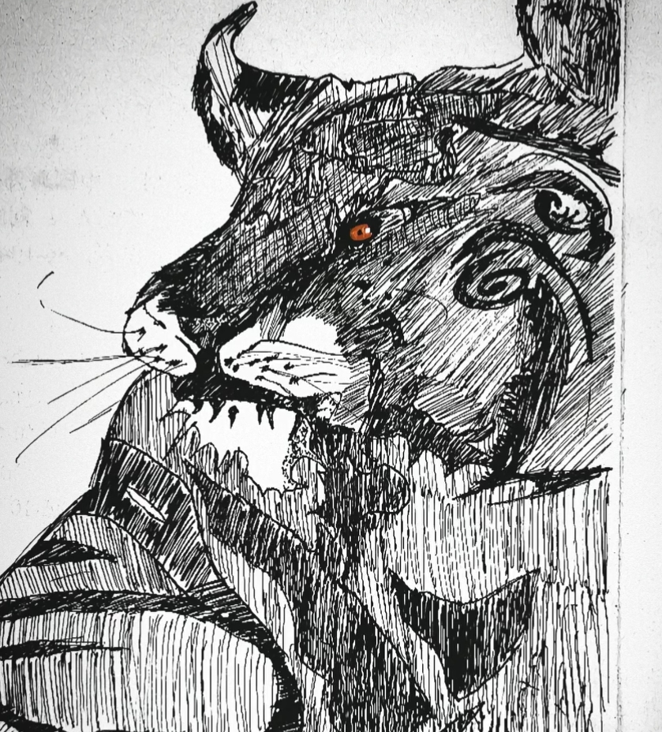

Hey there! I'm Dylan Luis, but you can call me Al. I'm 15 years old, born on June 30th, and my favorite color is Indigo. Music is a huge part of my life—I love listening to alternative indie, nu metal, and melancholic songs because they keep the silence away, which I find pretty boring.
When I'm not jamming to my favorite tunes, you'll probably find me drawing or creating art. I'm an ambivert, so I enjoy both spending time alone and hanging out with friends. Welcome to my corner of the internet, where I share my passion for music and art!
this is my extroverted "sun side" shining through! I’m all about that high-energy vibe, fueled by my favorite playlist: Linkin Park, Slipknot, Rammstein, Limp Bizkit, Evanescence, Twenty One Pilots, Soundgarden, System of a Down, and Deftones.
metal, in particular, pumps me up and makes me feel like I’m anything but ordinary. People might think I don't stick to sad or melancholic songs, but this side of me is all about power and passion—welcome to my energetic escape!
Welcome to my "moon side," where my introverted soul shines. I love melancholic music over nu metal or hard songs, especially alternative indie artists like Salvia Palth, Take Care, Sign Crushes Motorist, Strawberry Guy, and Slowdive—honorable mention to Alex G. I’ve been hooked on these since mid-2024, and they bring me calm and a vibe I adore. Step into my peaceful escape!



hallo, nama ku adalah charles, aku adalah pembuat website ini, saya sekali lagi mengucapkan selamat ulang tahun!! teruntuk dylan luis teman ku!
So, when I made this website, Louis asked me to make this website according to his wishes, so, for the last 10 days, I tried to fix the errors and design, I really hate it, because I'm confused, why when I change a little bit, it immediately gets bigger, the code is really bad
the code really fucked up. anyways, happy birthday bro!